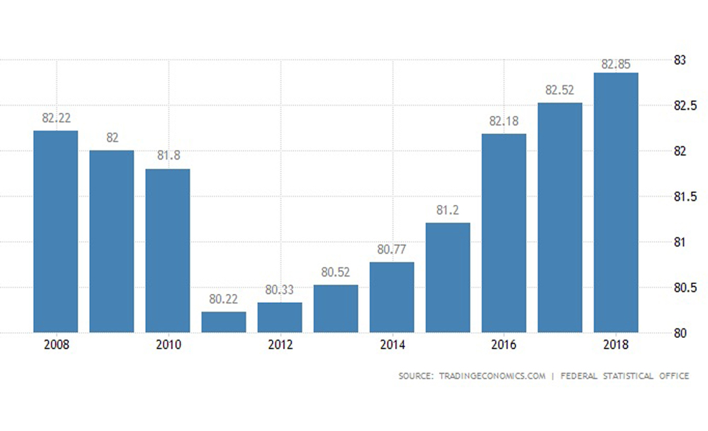
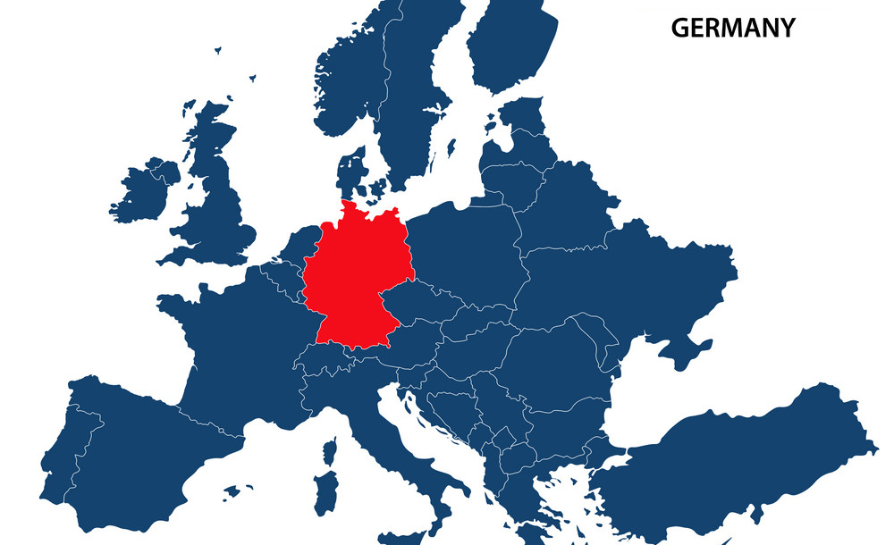
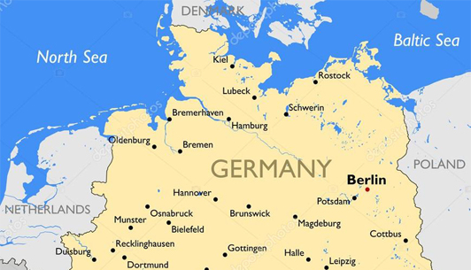
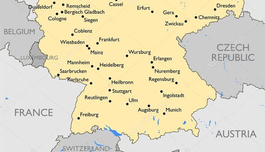

Currency : Euro.
Capital : Berlin.
Average population : 82,845,856.
Total size : 357,021 km2.
Borders : Denmark, Poland, Czech Republic, Austria, Switzerland, France, Belgium, Luxembourg and Netherland.
Geographical coordinates : 51 00 North, 9 00 East.
Continent : Europe.
Major cities : Berlin, Hamburg, Munich, Cologne, Frankfurt, Stuttgart and Dusseldorf.
Agricultural products : Potatoes, wheat, cabbages, cattle, pigs and poultry.
Natural resources : Coal, lignite, natural gas, iron ore, copper, nickel, uranium, potash, salt, construction materials and timber.

Capital : Berlin

Average population : 82,845,856

Total size : 357,021 km2

Borders - top

Borders - bottom

Other major cities - Cologne

Other major cities - Dusseldorf

Other major cities - Frankfurt

Other major cities - Hamburg

Other major cities - Munich

Other major cities - Stuttgard

Major landforms - German Alps

Major landforms - Black Forest

Major landforms - Ore Mountains

Major landforms - Palatine Forest

Major landforms - Rhine Valley

Major landforms - The Spreewald

Major landforms - Vogelsberg Mountains